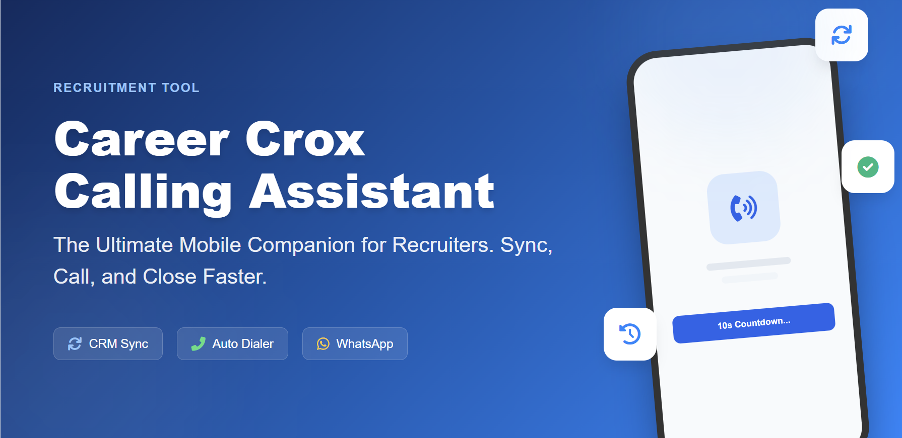

Smart Calling Assistant
Transform your recruitment workflow with automated dialing, real-time CRM synchronization, and intelligent performance tracking. The ultimate mobile companion for Career Crox CRM.
Workflow Redefined
Designed for high-volume recruitment professionals.
Auto-Dialer Sequence
Maintain momentum with automated 10-second countdowns between calls. Pause or resume instantly from the dashboard or remotely via CRM.
Instant CRM Sync
Synchronize your calling queue with a single tap. All call outcomes, durations, and notes are automatically uploaded to your CRM instance.
Live Metrics
Track Dialed vs. Connected calls and total Talktime. Built-in Average Handling Time (AHT) analytics help you maintain peak efficiency.
Smart Feedback
Add call notes immediately using customizable presets like "Interested," "Call Back," or "Not Interested" for zero-friction tracking.
Quick Setup Guide
Connect your mobile device to your CRM in seconds.
Secure Device Pairing
Open the app and enter the 6-digit pairing code generated by your Career Crox CRM web dashboard.
Sync Calling Queue
Once paired, tap the "Sync" button to pull your assigned candidate list and priority tasks from the CRM.
Start Automation
Hit "Start Calling". The app will navigate through your queue, initiating calls with smart cooldowns in between.
Document & Close
Upload resumes, link call recordings, and update candidate statuses directly from the post-call interface.